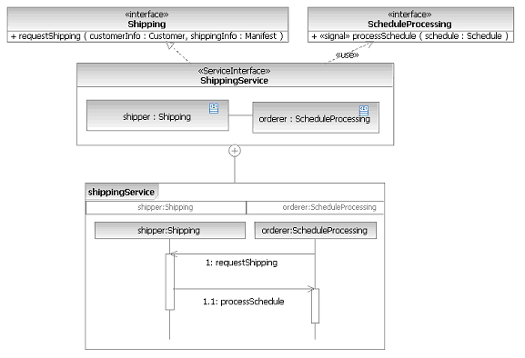

SoaML includes two stereotyped Collaborations, those being ServicesArchitecture and ServiceContract. The SoaML
CollaborationUse is a statement about the ability of a containing Classifier to provide or use
capabilities, have structure, or behave in a manner consistent with that expressed in the
CollaborationUse's Collaboration type. It is an assertion about the structure and behavior of the containing
classifier and the suitability of its parts to play roles for a specific purpose.
The following figure shows a ShippingService ServiceInterface that fulfills a ShippingContract
collaboration. The ShippingService contains a CollaborationUse that binds the parts representing the consumers and
providers of the ServiceInterface to the roles they play in the ServiceContract Collaboration. The shipping part is
bound to the shipping role and the orderer part is bound to the orderer role. These parts must be compatible with the
roles they play. In this case they clearly are, because the parts and roles have the same type. In general, these
types can be different, as the parts will often play roles in more than one contract. They also might have
capabilities beyond what the roles call for. This allows ServiceInterfaces to be defined that account for anticipated
variability, in order to be more reusable. It also allows ServiceInterfaces to evolve to support more capabilities
while fulfilling the same ServiceContracts.
The ShippingService ServiceInterface does not have to have exactly the same behavior as the
ServiceContract collaboration it is fulfilling, the behaviors only need to be compatible.

|